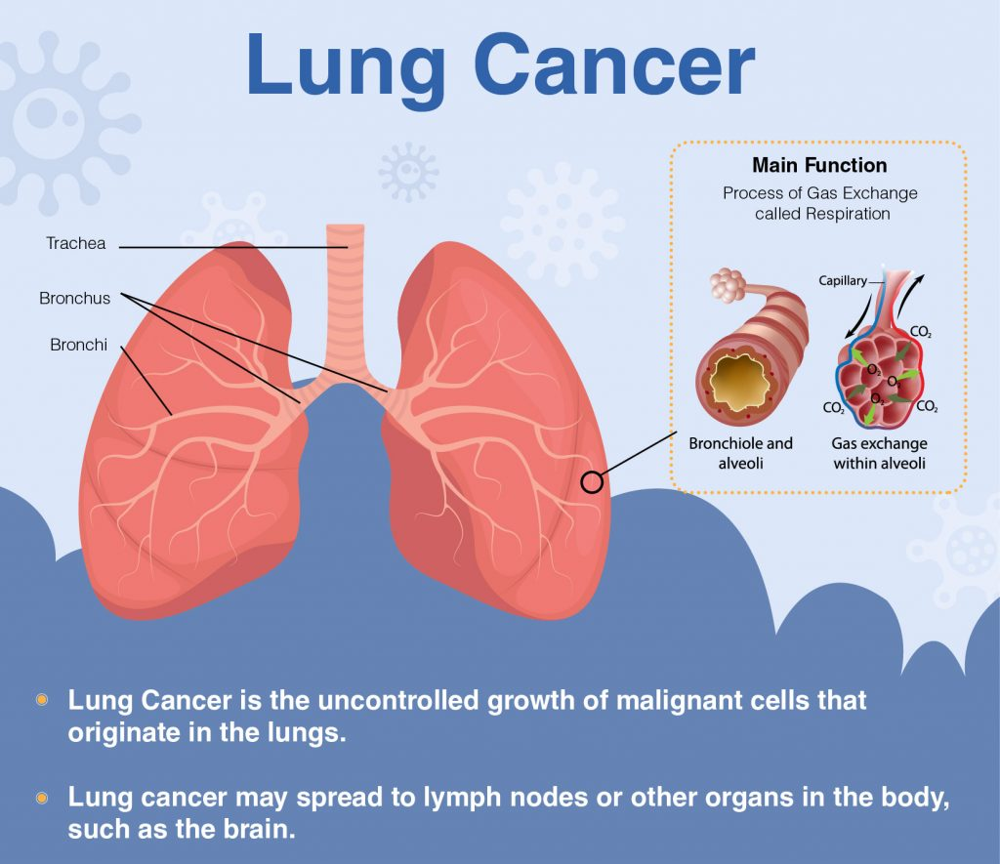
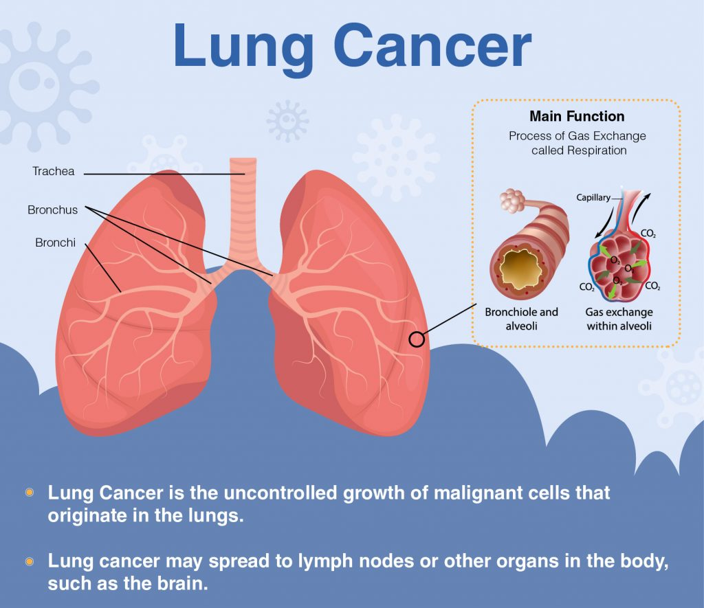

In this project, a dataset obtained from kaggle was trained to predict whether or not a patient has stroke.
Three different machine learning models were employed, each of them was evaluated and compared with one another to be able to obtain the one that performed best.
The features employed in the predictions were equally compared with each other in order to get the most important one among all of them.
 

With Lung Cancer dataset downloaded from kaggle, I was able to wrangle the dataset, perform some feature engineering, train three different models and obtain their individual performace before integrating them to obtain a Voting Classifier which performed better than the individual models.
In this project, four different models were employed to predict whether or not a patient has diabetes, and various evaluation metrics such as; accuracy score, classification report, recall score, f1 score, and confusion matrix were employed to determine which of the models performed best.

In this Project, the techniques of cleaning data in SQL was demonstrated by employing the necessary queries in order to get it done correctly.
In this project, four different models were employed to predict whether or not a patient has diabetes, and various evaluation metrics such as; accuracy score, classification report, recall score, f1 score, and confusion matrix were employed to determine which of the models performed best.
In this project, I explored a COVID-19 dataset to obtain meaningful insights using SQL.

In this project, an extensive data wrangling, exploratory data analysis, and feature engineering were done in order to train good models that can predict whether or not a patient has a heart disease. Further evaluations were done on these models to determine the best among them.

In this project, both Decision-Tree Regressor and Random Forest Regressor were employed to predict the cost of medical insurance. Both models were thereafter, compared to know which one performed better.
In this project, I explored a COVID-19 dataset to obtain meaningful insights using SQL.